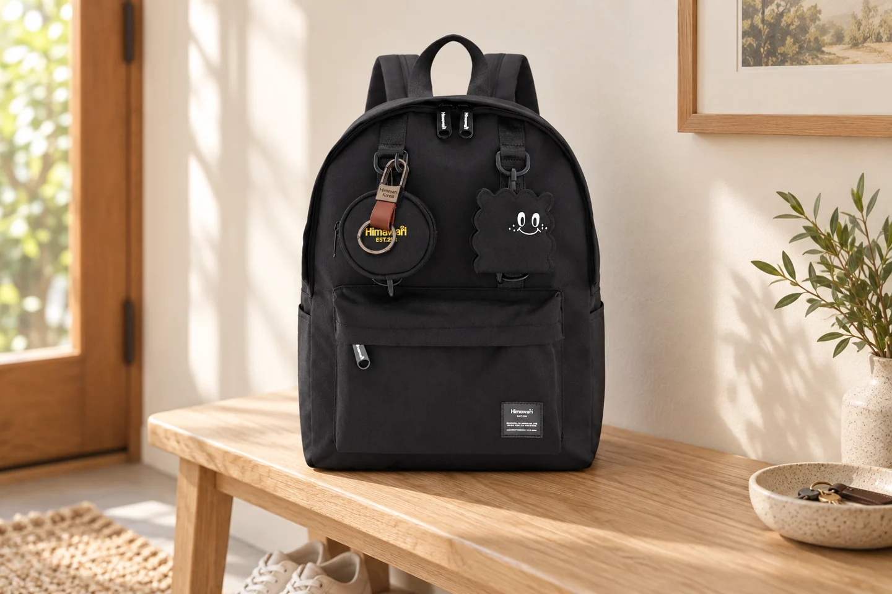

백팩을 손으로 옮길 때: 손잡이를 잡기 전 잠깐의 확인

등에 메고 다니던 백팩도 책상 옆으로 옮기거나 차에서 꺼낼 때는 손으로 들게 됩니다. 이 짧은 동작에서는 끈 길이보다 무엇을 잡고, 어느 방향으로 들어 올리는지가 중요합니다. 가방을 끌어당기기 전에 내용물과 주변을 한 번 살피는 습관을 만들어 보세요.
들기 전에 열린 칸부터 닫기
백팩을 바닥에서 들어 올리면 안쪽 물건의 방향도 바뀝니다. 열려 있는 메인 칸과 앞주머니를 확인하고, 밖으로 나온 물건이 없는지 봅니다. 지퍼가 잘 닫히지 않으면 손잡이로 들어 흔들어 맞추기보다 가방을 내려놓고 내용물을 다시 정리하세요. 옆 포켓에 담은 물건도 쉽게 빠질 상태라면 먼저 꺼내 두는 편이 낫습니다.
장식 고리와 운반 손잡이를 구분하기
눈에 잘 띄는 고리라고 모두 가방을 들어 올리는 용도는 아닙니다. 지퍼 고리, 키링, 장식 끈을 잡아 본체를 들지 마세요. 제품에서 운반용으로 마련한 손잡이를 확인하고, 연결 부위가 벌어지거나 손상된 흔적이 있으면 무리하게 사용하지 않습니다. 사진 속 0422도 상단 손잡이와 앞쪽 장식이 구분됩니다.
걸린 끈을 풀고 가까운 거리로 옮기기
어깨끈이 의자 다리나 다른 짐 아래에 걸려 있으면 먼저 풀어 주세요. 손잡이를 잡아도 본체가 따라오지 않을 때 더 세게 당기지 않는 것이 좋습니다. 가방이 무겁게 느껴지면 내용물을 나누거나 다른 손으로 본체를 받쳐 짧게 옮깁니다. 손잡이만 잡고 크게 휘두르거나 멀리 던져 놓는 동작은 피하세요.
내려놓는 순간까지 바닥을 보기
손에서 놓기 전에 깨끗하고 평평한 자리를 확보합니다. 책상 모서리에 반쯤 걸치거나 좁은 의자 끝에 두지 말고 바닥 전체가 받쳐지는지 보세요. 긴 거리를 이동한다면 제품의 착용 방식에 맞게 다시 메고, 손잡이에 매단 채 오래 보관하는 것과 잠깐 운반하는 것은 구분합니다.
참고·안내
- Himawari No.0422 제품 정보
- 실제 Himawari No.0422 블랙 제품 사진을 참고한 AI 연출 이미지입니다. 구성품은 구매 옵션에서 확인하세요.
자주 묻는 질문
상단 손잡이에 계속 걸어 두어도 되나요?
짧게 운반하는 것과 장기간 매달아 보관하는 것은 다릅니다. 보관할 때는 내용물을 비우고 바닥이 받쳐지는 자리를 마련하세요.
얼마나 무거운 짐까지 손잡이로 들 수 있나요?
제품별 허용 하중이 안내되지 않았다면 임의의 수치를 적용하지 마세요. 과하게 채우지 말고 연결 부위와 사용 안내를 확인하세요.